How I deeply process telco customer churn dataset.
classification
machine-learning
data-science
Author
vertikal
Published
August 3, 2023
On this occasion, I would like to discuss one of my projects that involves the telco customer churn dataset. Who doesn’t know about telco customer churn? This dataset is exceedingly common, and I’m confident that every data science practitioner has worked with it at some point. So, why am I still using this dataset? It’s because I want to demonstrate a different and more detailed approach on how to process it. Here, I will conduct a deeper Exploratory Data Analysis (EDA) and showcase how to create and fine-tune a machine learning model to align it with the intended business objectives, followed by interpreting the results.
Of course, the goals of this project are to produce actionable insights and the most suitable predictive model aligned with the existing business concepts. On this particular blog post, I will show detailed step by step on how to do the projects (including the codes) so this will be very technical, but if you just want to see the big picture you can visit this link:
• Data Introduction • Data Preparation (Import libraries, data cleaning & data wrangling) • Basic exploratory data analysis • Descriptive statistic • Univariate analysis • Multivariate analysis • Deep exploratory data analysis • Services and internet services analysis • Monthly charges analysis • Customer analysis • Benefits analysis • Churn analysis • Modelling • Features selection and encoding • Splits data and define custom metrics • Model building combination 1 • Model building combination 2 • Model building combination 3
• Model interpretation • PDP and ICE plots • Checking prediction’s confidence using confidence interval
Data Introduction
This dataset contain informations about customers that churn and not churned in a telco company. Below is the column informations: 1.customerID = customer unique ID. 2.gender = customer gender (M/F). 3.SeniorCitizen = old / young customer. 4.Partner = either a customer has partners or not. 5.Dependents = either a customer has dependents or not. 6.tenure = how long the customer subscribed (in month). 7.MultipleLines = either a customer using multiple lines or not (phone lines). 8.InternetService = either a customer using InternetService lines or not. 9.OnlineSecurity = either a customer has OnlineSecurity or not. 10.OnlineBackup = either a customer has OnlineBackup or not. 11.DeviceProtection = either a customer has DeviceProtection or not. 12.TechSupport = either a customer has TechSupport or not. 13.StreamingTV = either a customer has StreamingTV or not. 14.StreamingMovies = either a customer has StreamingMovie or not. 15.Contract = types of contract. 16.PaperlessBilling = either a customer has PaperlessBilling or not. 17.PaymentMethod = types of the payment method. 18.MonthlyCharges = how much charges per month. 19.TotalCharges = total charges of all time. 20.Churn = either a customer churn or not. 21.Hobby = customer hobby.
There are 4 columns with missing values which are DeviceProtection, Contract, TotalCharges and Hobby.
Code
#checking percentage of missing valuesmissingkolom = ['DeviceProtection','Contract','TotalCharges','Hobby']for x in missingkolom:print(f'Missing value of column {x} (%) : {round(df[x].isna().sum()/len(df) *100,2)}')
Missing value of column DeviceProtection (%) : 5.91
Missing value of column Contract (%) : 3.48
Missing value of column TotalCharges (%) : 31.01
Missing value of column Hobby (%) : 40.35
Code
#impute missing values with univariate imputation by value proportiondf['DeviceProtection'] = df['DeviceProtection'].fillna( pd.Series(np.random.choice(['No','Yes','No internet service'], p =list(df['DeviceProtection'].value_counts(normalize=True)), size=len(df))))df['Contract'] = df['Contract'].fillna( pd.Series(np.random.choice(['Month-to-month','Two year','One year'], p =list(df['Contract'].value_counts(normalize=True)), size=len(df))))
Here I impute DeviceProtection and Contract with univariate imputation by value proportion for the following reasons: 1.The missing values is not that much (<10%). 2.The columns don’t have any relationship with other columns so that multivariate imputation is not possible. 3.Using proportion is more precise in this case rather than use ‘mode’.
Reasons to delete: 1.Missing values is too many. 2.By business context, Hobby doesn’t give enough useful informations. 3.Cannot be imputed by multivariate imputation.
Code
#impute TotalCharges from tenure and MonthlyChargesdf['TotalCharges'] = df['TotalCharges'].fillna(df['tenure'] * df['MonthlyCharges'])
Even this column has so many missing values, I decided to impute it with multivariate imputation because: 1.By business context, TotalCharges is more or less tenure * MonthlyCharges. 2.So even the missing values are high, it can still be imputed with a strong justification.
Code
#there's a space in the total charges column.for x in df.TotalCharges:try:float(x)except:print(f'Unable to convert to float with this value : {x}')
Unable to convert to float with this value :
Unable to convert to float with this value :
Unable to convert to float with this value :
Unable to convert to float with this value :
Unable to convert to float with this value :
Unable to convert to float with this value :
Unable to convert to float with this value :
Unable to convert to float with this value :
Unable to convert to float with this value :
Unable to convert to float with this value :
Unable to convert to float with this value :
Unable to convert to float with this value :
Code
df[df.TotalCharges ==' '].head()
customerID
gender
SeniorCitizen
Partner
Dependents
tenure
PhoneService
MultipleLines
InternetService
OnlineSecurity
...
DeviceProtection
TechSupport
StreamingTV
StreamingMovies
Contract
PaperlessBilling
PaymentMethod
MonthlyCharges
TotalCharges
Churn
488
4472-LVYGI
Female
0
Yes
Yes
0
No
No phone service
DSL
Yes
...
Yes
Yes
Yes
No
One year
Yes
Bank transfer (automatic)
52.55
No
753
3115-CZMZD
Male
0
No
Yes
0
Yes
No
No
No internet service
...
No internet service
No internet service
No internet service
No internet service
Two year
No
Mailed check
20.25
No
936
5709-LVOEQ
Female
0
Yes
Yes
0
Yes
No
DSL
Yes
...
No
No
Yes
Yes
Two year
No
Mailed check
80.85
No
1082
4367-NUYAO
Male
0
Yes
Yes
0
Yes
Yes
No
No internet service
...
No internet service
No internet service
No internet service
No internet service
Two year
No
Mailed check
25.75
No
1334
1768-ZAIFU
Female
1
No
No
0
No
No phone service
DSL
No
...
No
No
No
No
Month-to-month
Yes
Electronic check
25.20
Yes
5 rows × 21 columns
When the tenure value is 0, the TotalCharges value is empty (‘space’). This is because customers who have just joined (less than a month) have not been charged yet, resulting in a TotalCharges value of 0. Since there are only 12 rows with this condition, I will delete them.
Code
#drop rows that has empty TotalCharges.df = df.drop(df.index[df.TotalCharges ==' ']).reset_index(drop=True)
Code
#check for duplicate data, if True then there's no duplicate.df.customerID.nunique() ==len(df)
True
Code
#feature engineered 2 new features for the sake of easier analysis.df['Services'] = df[['PhoneService','InternetService']].apply(lambda x: 'Both'iflist(x).count('No') ==0else'Internet Only'if x[0] =='No'else'Phone Only', axis=1)df['TotalBenefits'] = df.loc[:,'OnlineSecurity':'StreamingMovies']\ .apply(lambda x: list(x).count('Yes'), axis=1)
New features explanation: 1.Services = Combined values of PhoneService and InternetService. 2.TotalBenefits = Sum of benefits taken on OnlineSecurity until StreamingMovies.
Code
#Change values of 1 and 0 to 'Yes' and 'No'df['SeniorCitizen'] = df.SeniorCitizen.apply(lambda x: 'Yes'if x ==1else'No')
Change numerical value to strings for simpler and consistent analysis.
#change columns object data type to numericaldf.tenure = df.tenure.astype('int64')df.MonthlyCharges = df.MonthlyCharges.astype('float64')df.TotalCharges = df.TotalCharges.astype('float64')
Code
#checking values of real totalcharges and calculated totalchargesdf['TotalChargesDiff'] = df[['tenure','MonthlyCharges','TotalCharges']].apply(lambda x: round(abs(1- (x[0] * x[1] / x[2])) *100, 3), axis=1)
Here, I have created a new column called TotalChargesDiff to check the differences (%) between the actual TotalCharges value (from the dataset) and the calculated TotalCharges value (obtained by multiplying tenure with MonthlyCharges). If the difference is above 40%, I will consider those rows as invalid because the values of tenure and MonthlyCharges cannot be trusted.
#assign categorical and numerical columns on different dataframe for easier analysis.dfnum = df._get_numeric_data()dfcat = df.drop(columns = dfnum.columns)
Basic Exploratory Data Analysis.
Descriptive Statistics
Code
#numerical columns describe.dfnum.describe()
tenure
MonthlyCharges
TotalCharges
TotalBenefits
count
7012.000000
7012.000000
7012.000000
7012.000000
mean
32.506560
64.732760
2286.410207
2.042356
std
24.564234
30.109753
2265.759401
1.835886
min
1.000000
12.000000
13.500000
0.000000
25%
9.000000
35.450000
402.437500
0.000000
50%
29.000000
70.300000
1397.250000
2.000000
75%
56.000000
89.850000
3784.125000
3.000000
max
140.000000
118.750000
8684.800000
6.000000
1.All columns seems to have a normal min-max values. Nothing weird here. 2.Average tenure is about 30 months which is pretty low. 3.Average MonthlyCharge is about 65-70 USD which is pretty good. 4.Out of 6 benefits available, the average taken by customer is around 2, which is pretty low.
Code
dfcat.describe()
gender
SeniorCitizen
Partner
Dependents
PhoneService
MultipleLines
InternetService
OnlineSecurity
OnlineBackup
DeviceProtection
TechSupport
StreamingTV
StreamingMovies
Contract
PaperlessBilling
PaymentMethod
Churn
Services
count
7012
7012
7012
7012
7012
7012
7012
7012
7012
7012
7012
7012
7012
7012
7012
7012
7012
7012
unique
2
2
2
2
2
3
3
3
3
3
3
3
3
3
2
4
2
3
top
Male
No
No
No
Yes
No
Fiber optic
No
No
No
No
No
No
Month-to-month
Yes
Electronic check
No
Both
freq
3542
5874
3624
4920
6336
3372
3087
3486
3075
3066
3459
2798
2769
3850
4155
2354
5155
4821
1.Male and Female has the same proportion. 2.Most of customers is non SeniorCitizen with no Partner and No Dependents. 3.Favorite InternetService is Fiber optic. 4.Majority of customers is subscribed with ‘Month-to-month’ Contract. 5.5155 out of 7012 is non-Churn customers which make this dataset is imbalanced. 6.All these columns have low cardiality values.
Univariate Analysis
Code
fig, axarr = plt.subplots(1,4, figsize=(10, 4))for x in dfnum.columns: axarr[dfnum.columns.get_loc(x)].boxplot(df[x],patch_artist=True) axarr[dfnum.columns.get_loc(x)].set_xlabel(x)plt.suptitle('Outliers checking on numeric columns')fig.tight_layout(pad=1)plt.show()
Will drop outlier in tenure.
Code
#drop outlier in tenuredf = df[df.tenure <125]
Code
#plot distribution for numerical columnsfig, axarr = plt.subplots(1,4, figsize=(10, 4))for x in dfnum.columns: sns.histplot(data=dfnum[x], color='skyblue', kde=True, edgecolor='none', ax=axarr[dfnum.columns.get_loc(x)])plt.suptitle('Distribution plot', weight='bold')fig.tight_layout(pad=1)
Above plots are distribution plots on all numerical columns. 1.tenure and MonthlyCharges have a ‘U-shaped’ distribution. 2.TotalCharges has a positive-skew distribution.
Code
#count plot for categorical columnsplt.figure(figsize=(15,12))features = dfcat.columnsfor i in np.arange(1, len(features)+1): plt.subplot(5, len(features)//3-2, i) sns.countplot(x=df[features[i-1]], color='green') plt.xticks(rotation=10) plt.xlabel(features[i-1])plt.suptitle('CountPlot', size=19, weight='bold')plt.tight_layout(pad =1)
Here I count plotted all categorical columns.
Multivariate Analysis
Code
#count plots against 'churn'plt.figure(figsize=(15,12))features = dfcat.columnsfor i in np.arange(1, len(features)+1): plt.subplot(5, len(features)//3-2, i) sns.countplot(data=df, x=df[features[i-1]], hue='Churn') plt.legend(prop={'size': 8}) plt.xticks(rotation=10) plt.xlabel(features[i-1])plt.suptitle('CountPlot vs Churned', size=19, weight='bold')plt.tight_layout(pad =1)
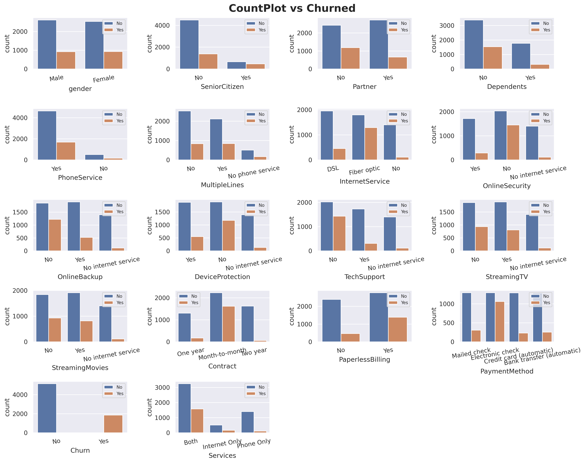
I added Churn count into the categorical plots. 1.You can see for column Gender, the values and Churn count is pretty equal which make this column will have a very low predictive power. 2.For InternetService, fiber optic has way higher in churn probability compare to DSL. 3.Same ways also applied on Month-to-month Contract and Electronic-check PaymentMethod.
Code
#distribution plots against 'churn'fig, axarr = plt.subplots(1,4, figsize=(10, 4))for x in dfnum.columns: sns.histplot(data=df, x = dfnum[x], color='skyblue', kde=True, edgecolor='none', ax=axarr[dfnum.columns.get_loc(x)], hue='Churn')plt.suptitle("Distribution plot", weight='bold')fig.tight_layout(pad=1)
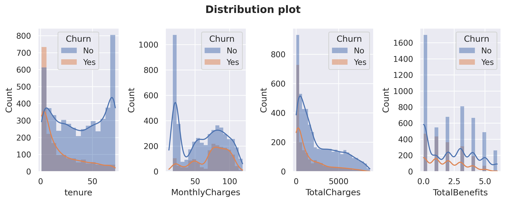
Let’s also compare Churn distribution on numerical columns. Customers tend to churn when the tenure is low and not churn when the MonthlyCharges is very low. I will do further analysis about these columns later.
Code
#change binary column into numericalbinary = ['gender','SeniorCitizen','Partner','Dependents','PhoneService','PaperlessBilling','Churn']value_mapping = {'No': 0,'Yes' : 1,'Male' : 1,'Female' : 0}dfcorr = df[binary]for col in binary: dfcorr[col] = dfcorr[col].map(value_mapping).astype('int64')
Correlation! 1.TotalCharges and tenure have a high positive correlation (causation : the longer the customers subscribed, the more they paid). 2.TotalBenefits also has a strong correlation with MonthlyCharges and TotalCharges (causation : more benefits taken also make the MonthlyCharges higher). Note : Correlation doesn’t indicate causation. Understanding the specific context, industry knowledge, and conducting further analysis or experiments can help determine if there is a causal relationship between the variables or if other factors are influencing the observed correlations.
Deep-Dive Exploratory Data Analysis
Code
#create a function to plot churn probability for numerical columns.def prob_plot(df,colom,x): means = df[colom].mean() medians = df[colom].median() data = df[df.Churn =='Yes'][colom].astype('float64') data1 = df[df.Churn =='No'][colom].astype('float64') kde = gaussian_kde(data) kde1 = gaussian_kde(data1) dist_space = np.linspace( min(data), max(data), 200) dist_space1 = np.linspace( min(data1), max(data1), 200) axarr[x].plot( dist_space, kde(dist_space), label='Churned', color='orange' ) axarr[x].plot( dist_space1, kde1(dist_space1), label='Not churn', color='blue') axarr[x].axvline(x = means, linestyle ='--', color='g', label='Mean') axarr[x].axvline(x = medians, linestyle ='--', color='r', label='Median') axarr[x].set_title('Probability', fontweight='bold', size=12) axarr[x].set(ylabel ='Probability', xlabel = colom) axarr[x].legend()
Services & InternetService analysis
Code
#count plot for Services.fig, axarr = plt.subplots(1,2, figsize=(12, 6))sns.countplot(data=df[df.Services =='Both'], x='InternetService', ax=axarr[0])sns.countplot(data=df[df.Services =='Internet Only'], x='InternetService', ax=axarr[1])axarr[0].set_title("Both phone service & internet service", weight='bold')axarr[1].set_title("Internet service only", weight='bold')plt.suptitle("Comparison of internet services on product services")plt.tight_layout(pad=1)plt.show()
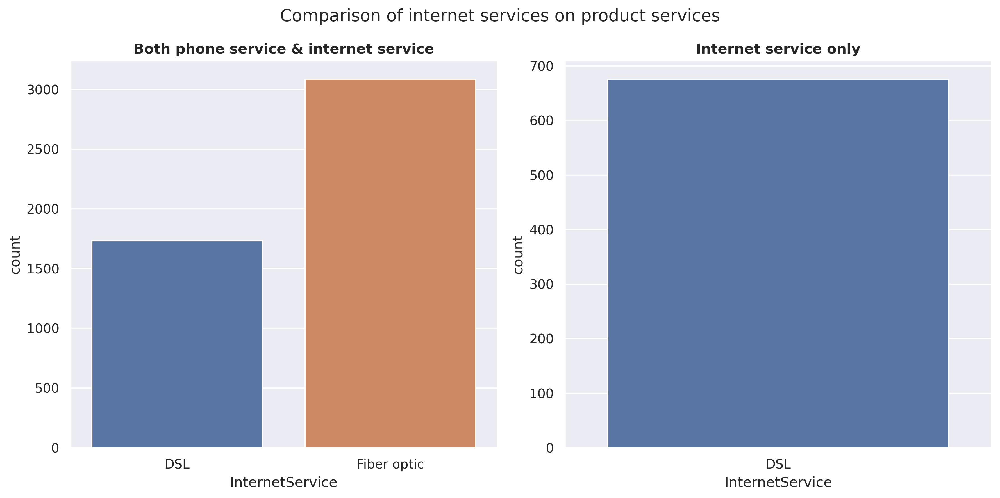
It is observed that customers tend to prefer Fiber optic over DSL for ‘phone & internet service’. However, when considering ‘internet service only’ without phone, there is no option for Fiber optic available. This suggests that in order to utilize Fiber optic, a phone connection (or phone service) is required.
The price of Fiber optic is higher, around 25 USD, compared to DSL. However, it’s important to keep in mind that these prices include a phone service with a single line.
MultipleLines
No 19.958088
Yes 24.980060
Name: MonthlyCharges, dtype: float64
Code
plt.figure(figsize=(10,5))sns.histplot(data=df_filtered, x='MonthlyCharges', hue='MultipleLines', multiple='stack')plt.title('Phone service distribution', weight='bold')plt.tight_layout()plt.show()
We can see that the price for a ‘phone service’ with a single line is around 20 USD, while the price for a ‘phone service’ with multiple lines is around 25 USD. This also means that the price for DSL is around 25 USD, while the price for Fiber optic is around 50 USD, which is twice as much as DSL.
At a MonthlyCharges range of approximately +- 20 USD, the ratio of non-churn customers is very high. It is known that products within this price range are typically ‘phone service only’. However, between the price range of 60 - 100 USD, the churn probability increases significantly. I am planning to conduct further analysis specifically for customers within this price range.
fig, axarr = plt.subplots(1,2, figsize=(12, 6))sns.scatterplot(data=df_filtered, x='MonthlyCharges', y='TotalBenefits', s=35, ax=axarr[0])sns.barplot(df_agg, x ='TotalBenefits', y ='MonthlyCharges')axarr[0].set_title('MonthlyCharges vs Totalbenefits', weight='bold')axarr[1].set_title('Average MonthlyCharges vs Totalbenefits', weight='bold')fig.tight_layout(pad =1)plt.show()
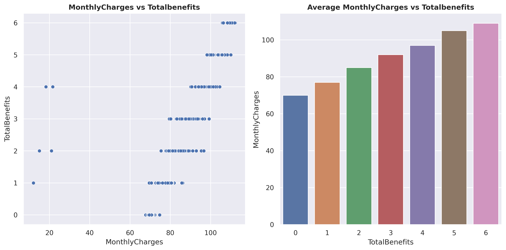
Here, you can observe that as more TotalBenefits are taken, the MonthlyCharges also increase. On the left plot, you can see that there are 5 outlier data points, which will be removed later.
Above are the prices of benefits with Fiber optic and a single line phone connection. You can see that StreamingTV and StreamingMovies are more expensive compared to other benefits, approximately +- 5 USD.
Now that we know the prices of every product, here’s a recap:
DSL = approximately 25 USD. Fiber optic = approximately 50 USD. Phone service (single line) = approximately 20 USD. Phone service (multiple lines) = approximately 25 USD. OnlineSecurity - TechSupport = approximately 5 USD. StreamingTV - StreamingMovies = approximately 10 USD.
With this data, we can perform a simple ‘anomaly detection’ by manually calculating the MonthlyCharges and comparing them with the actual MonthlyCharges, similar to how we calculated the TotalChargesDiff above.
#creating a function to engineered a new feature.def statuss(x): x =list(x)if (x[0] =='Yes') & (x[1] =='Yes'):return'Both'elif (x[0] =='Yes') & (x[1] =='No'):return'Partner Only'elif (x[0] =='No') & (x[1] =='Yes'):return'Dependent Only'else:return'Single'
I have created a new feature called ‘Status’. This feature is derived from the columns Partner and Dependents. 1.If customers have both Partner and Dependents, it will be labeled as ‘Both’. 2.If customers have Partner but no Dependents, it will be labeled as ‘Partner Only’. 3.If customers have Dependents but no Partner, it will be labeled as ‘Dependent Only’. 4.If customers have neither Partner nor Dependents, it will be labeled as ‘Single’.
Customers labeled as ‘Partner Only’ are considered the best since they have the longest tenure and the highest MonthlyCharges. The second-best group is ‘Both’, although these customers may not have MonthlyCharges as high as those in the ‘Single’ group, their tenure is almost double that of the ‘Single’ group.
plt.figure(figsize=(10,5))sns.barplot(data=df_status, x ='SeniorCitizen', y='value', hue='Status')plt.title("Status comparison between senior citizen", size=15, weight='bold')plt.tight_layout()plt.show()
For non-Senior citizens, ‘Single’ customers have the highest frequency, followed by ‘Both’. For Senior citizens, ‘Single’ is also the highest category, but the difference with ‘PartnerOnly’ is not as significant. From the plots above, we can also conclude that young people tend to have dependents more than older people.
Code
df_status = df.groupby('Status')[['OnlineSecurity','OnlineBackup','DeviceProtection','TechSupport','StreamingTV','StreamingMovies']]\ .agg(lambda x: list(x).count('Yes'))df_status['total'] = df_status.apply('sum',axis=1)for x in df_status.drop(columns='total').columns: df_status[x] = (df_status[x] *100/ df_status.total).round()df_status.drop(columns='total', inplace=True)
Code
df_status.plot(kind='bar', rot=0)plt.title('Benefit count comparison between status (%)', size=12, weight='bold')plt.legend(bbox_to_anchor=(1, 1))plt.show()
Single and PartnerOnly customers tend to prefer entertainment benefits such as StreamingTV and StreamingMovies compared to other customers. Additionally, these customers show a lower preference for using TechSupport and OnlineSecurity.
Benefits analysis
Code
fig, axarr = plt.subplots(1,2, figsize=(12, 6))sns.countplot(df[df.Services !='Phone Only'], x ='TotalBenefits', ax=axarr[0])sns.barplot(df[['OnlineSecurity','OnlineBackup','DeviceProtection','TechSupport','StreamingTV','StreamingMovies']]\ .apply(lambda x: list(x).count('Yes')).reset_index(), x ='index', y =0, ax=axarr[1])axarr[0].set_title('TotalBenefits Count', size=12, weight='bold')axarr[0].set(ylabel=None)axarr[1].set(ylabel=None)axarr[1].set_title('Benefits Count', size=12, weight='bold')axarr[1].tick_params(axis='x', rotation=25)fig.tight_layout()plt.show()
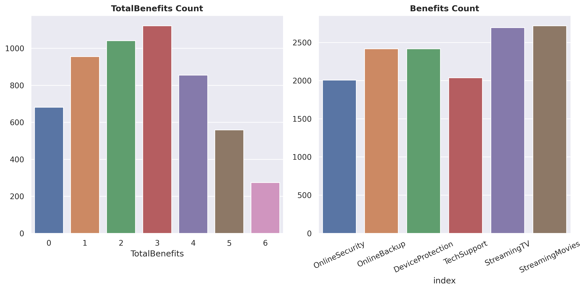
The average number of TotalBenefits taken by customers is around 3, with StreamingTV and StreamingMovies being the most popular choices.
Code
df_total = pd.DataFrame()for x in ['OnlineSecurity','OnlineBackup','DeviceProtection','TechSupport','StreamingTV','StreamingMovies']: total =list(df[df[x] =='Yes']['Churn']).count('Yes') /len(df[df[x] =='Yes']['Churn']) df_total = pd.concat([df_total, pd.DataFrame([x],[total])])
While StreamingTV and StreamingMovies are the most favored choices, the churn probability associated with them is also the highest.
Churn analysis
Code
fig, axarr = plt.subplots(1, figsize=(10, 6))sns.scatterplot(data=df, x ='MonthlyCharges', y ='tenure', hue ='Churn', s=20)plt.fill_between((68 , 97),20, alpha=0.2, color='green')plt.fill_between((68 , 97),52.5, 72.5, alpha=0.2, color='blue')plt.title('MonthlyCharges vs tenure vs Churn', size =15, weight ='bold')plt.show()
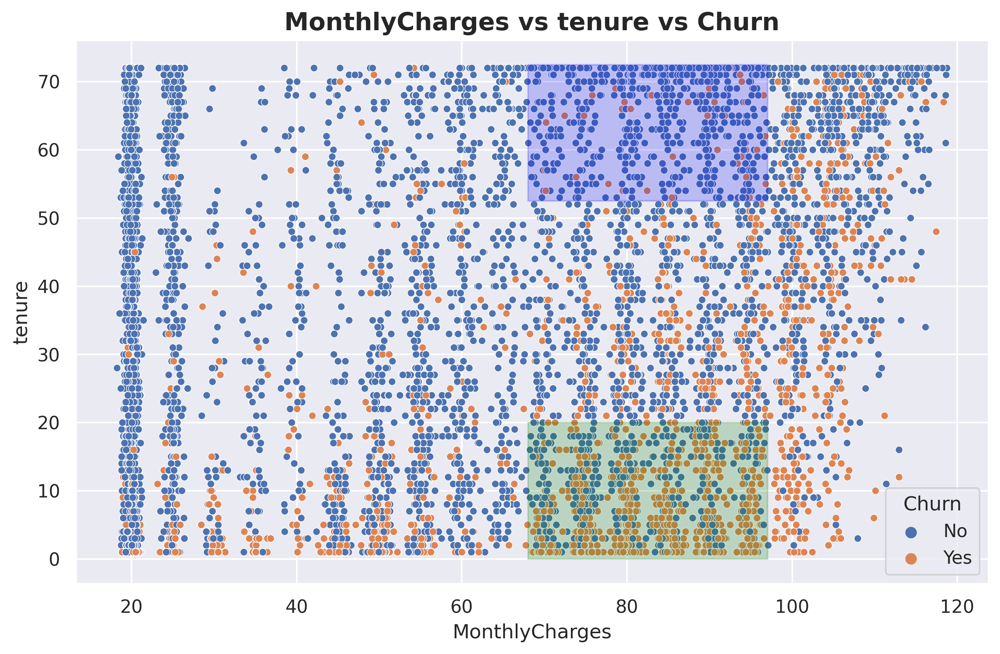
Here, I have created two areas, denoted by green and blue, both focusing on MonthlyCharges in the range of 70 - 95 USD. This price range corresponds to the highest churn probability. The green area represents customers with low tenure and is predominantly occupied by churned customers, while the blue area represents customers with high tenure and is predominantly occupied by non-churned customers.
Code
plt.subplots(1, figsize=(15, 8))sns.scatterplot(data=df, x ='MonthlyCharges', y ='tenure', s=35, hue='TotalBenefits', style='InternetService', palette='coolwarm')plt.fill_between((68 , 97),20, alpha=0.15, color='green')plt.fill_between((68 , 97),52.5, 72.5, alpha=0.15, color='blue')plt.title('MonthlyCharges vs tenure vs TotalBenefits vs InternetService', size =15, weight ='bold')plt.show()
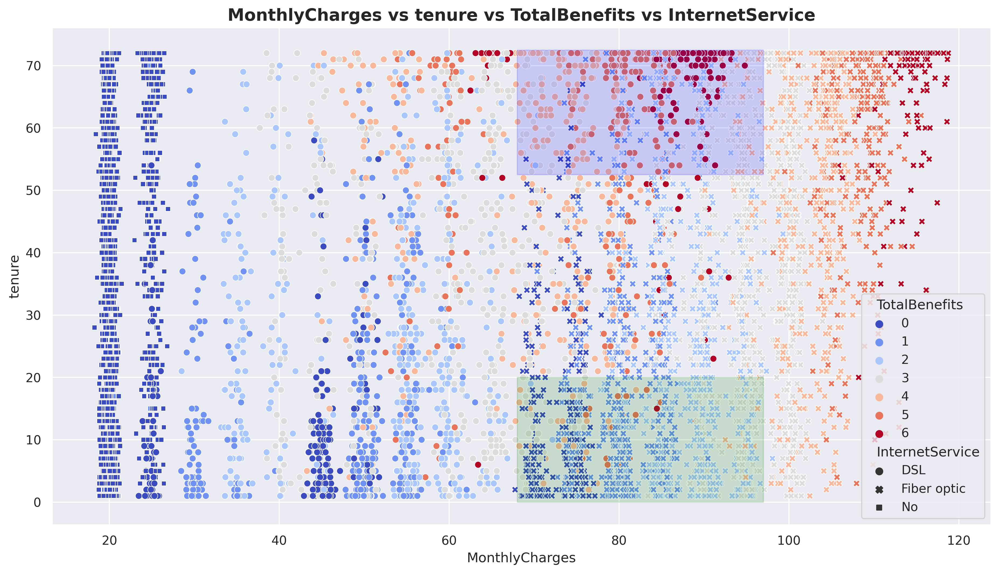
Still on the same plot, I have added TotalBenefits and InternetService. It can be observed that in the green area, Fiber optic is the dominant InternetService with low TotalBenefits. On the other hand, the blue area is dominated by DSL with high TotalBenefits. This indicates that customers, at the same price point, tend to choose DSL with high TotalBenefits rather than Fiber optic with low TotalBenefits. Note that Fiber optic prices are doubled than DSL.
With the observed pattern above, we can create an important new feature, which we will refer to as ‘FO_LB’ (Fiber optic_Low benefit). I will assign a value of ‘1’ to indicate that the internet service is Fiber optic and the Totalbenefits taken are less than or equal to 3. For other cases, I will assign ‘0’.
One important thing to address before we proceed is considering the types of errors to make this project as realistic as possible. Typically, there are two types of errors: false positive (FP) and false negative (FN). However, in this project, I will introduce three types of errors.
1.FP: False positive 2.FN1: False negative for customers with MonthlyCharges below 95 USD 3.FN2: False negative for customers with MonthlyCharges above 95 USD (VIP customers) Let’s agree on the misclassification ratio, which is FP:FN1:FN2 = 1:3:5
It’s important to note that this dataset is imbalanced, meaning there is a significant difference in the number of samples between the classes.
Based on these problems, we can set up our model’s parameters as follows:
1.Hyperparameter tuning. 2.Decision threshold tuning. 3.Oversampling data using SMOTE. 4.Applying weights to the models. I will be using Random Forest, XGBoost, and Logistic Regression.
Metrics: Custom scoring based on sample misclassification. Precision. Recall. F1_score. Once the models are evaluated using these metrics, I will interpret the best model.
I have dropped the columns from ‘Services’ to ‘Status’ as these columns were engineered features created for simpler exploratory data analysis (EDA). Additionally, I have also dropped the ‘PaperlessBilling’ and ‘PaymentMethod’ columns because, in the business context, these columns are considered irrelevant for determining customer churn since they represent optional ‘features’ for customers.
Code
#converting 'No internet service' to 'No' in benefit columns.KolomBenefit = ['OnlineSecurity','OnlineBackup','DeviceProtection','TechSupport','StreamingTV','StreamingMovies']for x in KolomBenefit: df[x] = df[x].apply(lambda x: 'No'if x =='No internet service'else x)
Code
#converting 'No phone service' to 'No'df['MultipleLines'] = df[x].apply(lambda x: 'No'if x =='No phone service'else x)
Code
#dict to mapping string to numerical.value_mapping = {'No': 0,'Yes' : 1,'Male' : 1,'Female' : 0}
Code
#binary encodingbinary =list(df.drop(columns=['tenure','InternetService','MonthlyCharges','TotalCharges','TotalBenefits','Contract','FO_LB']).columns)for col in binary: df[col] = df[col].map(value_mapping).astype('int64')
Code
#label encodingdf['Contract'] = df['Contract'].apply(lambda x: 1if x =='Month-to-month'else2if x =='One year'else3)
Code
#one hot encodingdf = pd.get_dummies(df, columns=['InternetService'])
Analysis of how the models performed: 1.RandomForest performs best with hyperparameter tuning and a lower decision threshold. However, this model performs worst when using SMOTE. 2.LogisticRegression performs worst when using ‘sample weighting’. 3.XGBoost performs best when using SMOTE. 4.It’s important to note that all models produce similar results when using their best parameters and conditions. 5.In my opinion, the greatest impact is achieved by using hyperparameter tuning and decision threshold tuning, rather than using SMOTE and weighting techniques.
Model Interpretation
In this section, I want to show you how to interpret a tree-based model, such as Random Forest, so we can have a better understanding of how the model actually works.
Code
#selecting the best parameter for random forestrf_param = final_result[final_result['model'] =='MB1_RF']['params'][0]rf_param
In a Jupyter environment, please rerun this cell to show the HTML representation or trust the notebook. On GitHub, the HTML representation is unable to render, please try loading this page with nbviewer.org.
What is ICE? It is a plot that shows how a model makes predictions based on changing the value of one or more features, while keeping the values of other features constant. This provides us with more insights and understanding of how the model treats features to make predictions. ICE works per row (or per customer in this case), and PDP is simply the average of ICE.
The light blue lines represent ICE (Individual Conditional Expectation), and the yellowish blue line represents PDP (Partial Dependence Plot). The X-axis represents MonthlyCharges, while the Y-axis represents the change in prediction probability. At MonthlyCharges of 60.7 USD, you can observe that some customers experience a significant increase in churn probability as the MonthlyCharges increase. However, it is important to note that not all customers have the same response. Some customers are minimally affected, and some may not be affected at all.
Code
pdp_ice_plot(rf, X_test, 'MonthlyCharges')
obtain pred_func from the provided model.
This is the same plot as above, but I have grouped the ICE into 5 clusters for easier viewing and analysis. You can see that there are some customers who experience a significant increase in churn probability as the MonthlyCharges increase.
Code
pdp_ice_plot(rf, X_test, 'tenure')
obtain pred_func from the provided model.
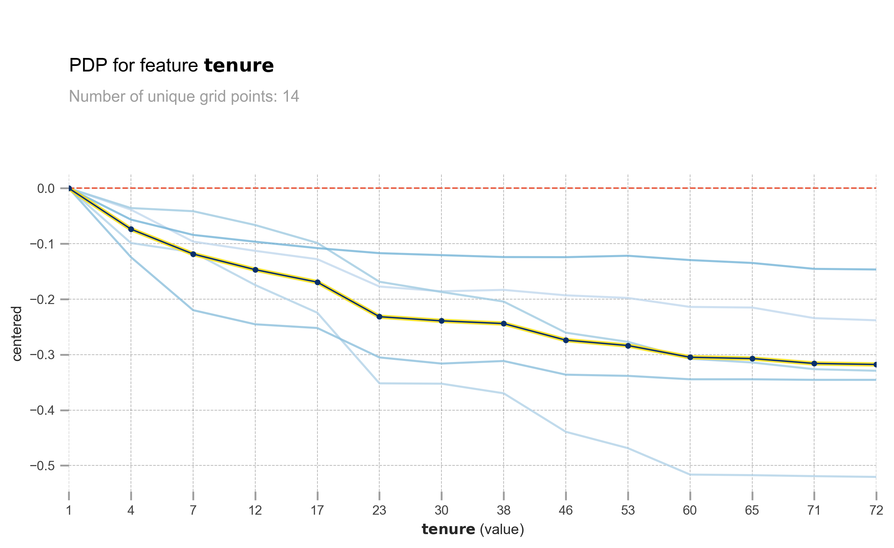
The longer the tenure, the lower the churn probability. However, the effect is not the same for all customers. Some customers are greatly affected, while others are barely affected.
Code
pdp_ice_plot(rf, X_test, 'Contract')
obtain pred_func from the provided model.
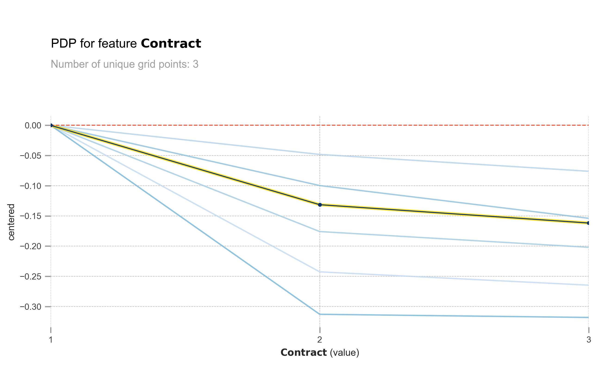
The same also goes with Contract. Longer contract means lower churn probability.
obtain pred_func from the provided model.
obtain pred_func from the provided model.
obtain pred_func from the provided model.
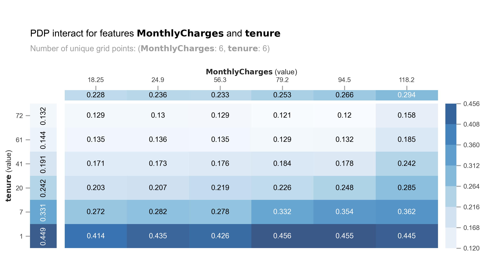
Let’s analyze the combination of MonthlyCharges and tenure. We can observe a spike in churn probability for MonthlyCharges ranging from 56.3 USD to 79.2 USD, particularly for customers with a tenure of less than 7 months.
obtain pred_func from the provided model.
obtain pred_func from the provided model.
obtain pred_func from the provided model.
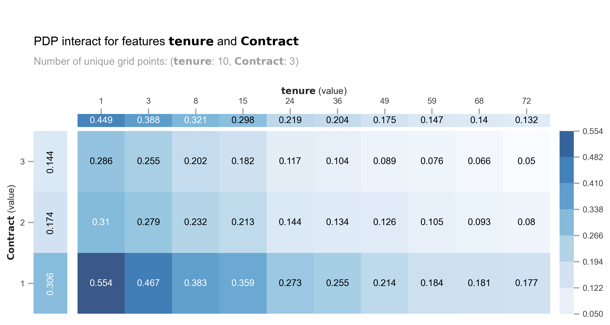
The model produces similar churn probabilities for customers with a combination of a 2-year contract and low tenure compared to those with a month-to-month contract and medium tenure (24-36 months).
You can see how PDP and ICE plots can be very beneficial in understanding how the model utilizes features to make predictions. In the next section, I will demonstrate how to assess the model’s prediction confidence level.
Confidence level based on trees’ standard deviation and confidence interval.
Tree-based models like RandomForest make predictions by using the mean of all the trees’ prediction probabilities. However, instead of solely relying on the mean, we can also calculate the standard deviation. A higher standard deviation indicates lower confidence in the predictions. Additionally, we can utilize confidence intervals, such as 95% or even more extreme at 99%.
Code
#extract all trees' prediction probability per rowpredict = np.stack([x.predict_proba(X_test)[:,1] for x in rf.estimators_])
Code
#assign mean and std. deviation of trees' prediction probability.df_pred = X_test.copy()df_pred['avg'] = np.round(np.mean(predict, axis =0) *100, 2)df_pred['std_dev'] = np.round(np.std(predict, axis =0) *100, 2)
Let’s consider the example of row 1. The model predicts a 40% probability of churn for the customer, with a confidence interval of +- 10%. By default, the model’s output indicates that the customer will not churn. However, due to the high confidence interval, it is safer to assume that the customer will churn.
Checking the standard deviation and confidence interval of the trees is extremely useful, particularly when the cost of ‘False Negative’ is significant and can have severe consequences.